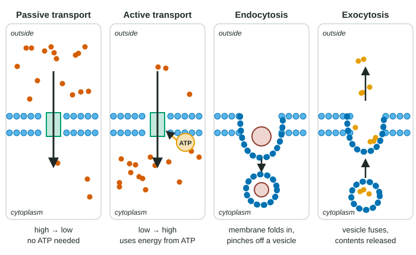

Membrane Transport
Substances cross membranes in three ways.
Part 1 · Hook
Why this matters
Seawater holds about 40 times as much sodium as the inside of a typical animal cell, and your own blood about 10 times as much. Meanwhile the cell holds 30 times as much potassium as the fluid around it. Left alone, diffusion would wipe out those differences. A cell spends a large share of its ATP, around a fifth to a third in many animal cells, just pushing ions back where they came from. Staying different from your surroundings is work.
Part 2 · Before you start
What this builds on
Part 3 · Prerequisite check
Quick check before you start
1. Which molecule crosses a phospholipid bilayer most easily by simple diffusion?
- Glucose
- A sodium ion
- Oxygen
Show the answer
Oxygen is small and nonpolar, so it dissolves in the hydrophobic core and diffuses straight through. Glucose and ions need transport proteins.
- Glucose:
- A sodium ion:
- Correct: Oxygen:
2. What is a vesicle?
- A small sac of membrane that carries material inside a cell
- A protein that makes ATP
- A pore through the nuclear envelope
Show the answer
Vesicles are small membrane sacs that carry material between the ER, the Golgi and the plasma membrane.
- Correct: A small sac of membrane that carries material inside a cell:
- A protein that makes ATP:
- A pore through the nuclear envelope:
3. A receptor on the cell surface:
- Digests molecules that touch the cell
- Binds a particular signaling molecule
- Lets water through the membrane
Show the answer
A receptor is a protein that binds one particular signaling molecule, which changes the cell's activity.
- Digests molecules that touch the cell:
- Correct: Binds a particular signaling molecule:
- Lets water through the membrane:
Part 4 · See it
See it first

Part 5 · Step by step
How it works, step by step
- A substance is more concentrated on one side of a membrane, and the membrane lets it cross.It moves down its gradient by passive transport, driven by its own motion, with no energy from the cell.
- Passive movement continues until the concentrations on the two sides are equal.Molecules still cross both ways, but at equal rates: a dynamic equilibrium with no net change.
- A cell needs a substance at a higher concentration than its surroundings.A transport protein uses energy from ATP to move it against its gradient: active transport.
- Substances keep leaking slowly across the selectively permeable membrane, and active transport keeps moving them back.The cell holds an internal environment different from the outside, part of homeostasis.
- A particle or package is too large for any transport protein.The cell moves it in vesicles: the membrane folds in to take it (endocytosis) or a vesicle fuses with the membrane to release it (exocytosis).
Part 6 · Key ideas
Key ideas
- Passive transport: down the gradient (high to low), no ATP. The energy comes from the particles' own motion. It stops having a net effect at dynamic equilibrium, when crossings in each direction balance.
- Active transport: against the gradient (low to high), using energy, usually from ATP, and a transport protein. Only active transport can build up or keep a substance at a higher concentration inside than outside.
- Bulk transport moves large particles or large amounts in vesicles. Endocytosis takes material in: phagocytosis (particles), pinocytosis (fluid), receptor-mediated endocytosis (particular molecules bound to receptors). Exocytosis releases material, adding the vesicle's membrane to the cell surface.
- Selective permeability plus active transport let a cell keep an internal environment different from its surroundings. Keeping internal conditions within a working range is called homeostasis.
Part 7 · Misconception
A common mistake
The wrong idea: When concentrations become equal on both sides of a membrane, the molecules stop moving across.
What actually happens: They keep moving and crossing in both directions. At equilibrium the numbers crossing each way are equal, so the concentrations stop changing even though the movement continues.
Part 8 · Check yourself
Check yourself
Exam-style questions. Anything you miss goes into your review queue.
Experimental setup
A dialysis tubing bag in iodine solution
Dialysis tubing is a thin plastic film with tiny pores. It lets water, glucose and iodine through but not starch. A student filled a tubing bag with a solution of 10% glucose and 1% starch, tied it shut and placed it in a beaker of water with a little iodine added. Iodine turns blue-black when it meets starch. The student tested the bag and the beaker at the start and after 30 minutes.
| Location | Color at start | Color after 30 min | Glucose test at start | Glucose test after 30 min |
|---|---|---|---|---|
| Inside the bag | Cloudy white | Blue-black | Positive | Positive |
| Beaker water | Amber (iodine) | Amber (iodine) | Negative | Positive |
1. The bag is left in the beaker for 24 hours. Predict the state of the glucose at the end.
- Almost the whole of the glucose has left the bag and ended up in the much larger beaker.
- Equal concentrations, with molecules still crossing both ways.
- Glucose concentration is about equal inside and out, and the glucose molecules have stopped crossing the tubing.
- Glucose has moved back into the bag, where it is now more concentrated.
Show the answer
Glucose diffuses out until its concentration is the same on both sides. Molecules keep moving at random, so they still cross both ways, but equal numbers cross each way, so there is no net change: a dynamic equilibrium.
- Almost the whole of the glucose has left the bag and ended up in the much larger beaker.: Diffusion evens out concentrations; it does not move every molecule to one side.
- Correct: Equal concentrations, with molecules still crossing both ways.: This describes dynamic equilibrium: equal concentrations, crossings still happening at equal rates both ways.
- Glucose concentration is about equal inside and out, and the glucose molecules have stopped crossing the tubing.: Molecules keep moving and crossing at equilibrium; only the net movement stops.
- Glucose has moved back into the bag, where it is now more concentrated.: Passive movement cannot build up a higher concentration on one side; that would need energy.
2. Which kind of transport moved glucose and iodine in this experiment?
- Passive transport: each moved down its own gradient.
- Active transport, because the two substances moved in opposite directions across the same tubing at the same time.
- Bulk transport, because the bag took in iodine in vesicles.
- Active transport, because the movement continued for 30 minutes.
Show the answer
Glucose moved from the bag (high) to the beaker (none), and iodine from the beaker (high) to the bag (none). Each went down its gradient, driven by its own motion, which is passive transport.
- Correct: Passive transport: each moved down its own gradient.: Each substance moved from high to low concentration with no energy supplied, which is passive transport.
- Active transport, because the two substances moved in opposite directions across the same tubing at the same time.: Opposite directions just mean the two gradients pointed opposite ways; each move was still downhill.
- Bulk transport, because the bag took in iodine in vesicles.: There are no vesicles in tubing; the molecules passed through pores one by one.
- Active transport, because the movement continued for 30 minutes.: Passive movement continues for as long as a gradient exists; time alone does not make it active.
Graph
Amino acid uptake with and without ATP
Yeast cells growing not on sugar but on a fuel they can break down only by respiration in their mitochondria were placed in a medium containing a radioactively labeled amino acid. One batch was first treated with cyanide, which stops mitochondria from making ATP, so these cells made almost no ATP. Researchers measured the concentration of labeled amino acid inside the cells and divided it by the concentration outside. A value of 1.0 means the concentrations are equal. Points are means of 5 samples; error bars show ±2 SE.
No cyanideCyanide
Data table
| Time (min) | No cyanide (± error) | Cyanide (± error) |
|---|---|---|
| 0 | 0 | 0 |
| 10 | 2.1 ± 0.3 | 0.6 ± 0.1 |
| 20 | 4.3 ± 0.4 | 0.9 ± 0.1 |
| 30 | 6.2 ± 0.5 | 1 ± 0.1 |
| 45 | 8.4 ± 0.6 | 1 ± 0.1 |
| 60 | 9.6 ± 0.6 | 1 ± 0.1 |
3. Which statement best describes the data?
- In both batches the inside concentration rises well above the outside concentration within the hour.
- Untreated cells reach about ten times the outside level; cyanide-treated cells level off at equal.
- With cyanide the cells take up the amino acid faster, then stop at a ratio of 1.0.
- Without cyanide the ratio levels off at 1.0 after about 30 minutes.
Show the answer
The untreated cells reach a ratio of 9.6 by 60 minutes; the cyanide-treated cells rise to 1.0 by 30 minutes and stay there.
- In both batches the inside concentration rises well above the outside concentration within the hour.: The cyanide batch never goes above 1.0, so only the untreated batch accumulates the amino acid.
- Correct: Untreated cells reach about ten times the outside level; cyanide-treated cells level off at equal.: This matches both curves.
- With cyanide the cells take up the amino acid faster, then stop at a ratio of 1.0.: At every time point the cyanide batch is below the untreated batch, so its uptake is slower.
- Without cyanide the ratio levels off at 1.0 after about 30 minutes.: The ratio of 1.0 is where the cyanide batch levels off; the untreated batch keeps rising past 9.
4. Which explanation best accounts for the difference between the two batches?
- Cyanide damages the bilayer of the cells, so the amino acid leaks back out as fast as it comes in.
- Untreated cells use ATP to move it against its gradient; without ATP it moves only until both sides are equal.
- Cyanide makes the outside concentration of the amino acid rise, so the ratio stays at or below 1.0.
- The untreated cells make new amino acid of this kind inside, which raises the concentration measured inside.
Show the answer
A ratio above 1.0 means the amino acid is moving from low to high concentration, which takes energy. When cyanide stops ATP production, the cells can still take it in passively, but only until inside equals outside.
- Cyanide damages the bilayer of the cells, so the amino acid leaks back out as fast as it comes in.: If the bilayer were leaky, the ratio would not climb neatly to 1.0 and hold; the pattern fits passive movement to equal concentrations.
- Correct: Untreated cells use ATP to move it against its gradient; without ATP it moves only until both sides are equal.: This links the ratio above 1.0 to active transport and ATP, and the level at 1.0 to passive transport.
- Cyanide makes the outside concentration of the amino acid rise, so the ratio stays at or below 1.0.: Cyanide stops ATP production in the cells; it does not change the amino acid outside.
- The untreated cells make new amino acid of this kind inside, which raises the concentration measured inside.: The measured amino acid is the labeled one from the medium, so cells making their own would not raise its value.
5. At 10 minutes the ratios are 2.1 ± 0.3 without cyanide and 0.6 ± 0.1 with cyanide (±2 SE). What can you conclude?
- No overlap, so the difference is likely real.
- The error bars overlap, so the batches are the same at 10 minutes.
- The error bars do not overlap, so there is certainly no difference.
- Nothing can be concluded, because error bars matter just for the last time point of a time course.
Show the answer
The untreated range runs from 1.8 to 2.4 and the cyanide range from 0.5 to 0.7. Error bars of ±2 SE that do not overlap suggest the difference is statistically significant, not just sampling noise.
- Correct: No overlap, so the difference is likely real.: Non-overlapping ±2 SE bars are evidence of a real difference.
- The error bars overlap, so the batches are the same at 10 minutes.: The ranges (1.8 to 2.4 and 0.5 to 0.7) do not overlap at all.
- The error bars do not overlap, so there is certainly no difference.: Non-overlapping bars point to a difference, not the absence of one.
- Nothing can be concluded, because error bars matter just for the last time point of a time course.: Error bars can be compared at any time point where both means have them.
Data table
LDL uptake by skin cells
LDL particles carry cholesterol in the blood. Cells take them in by receptor-mediated endocytosis. Researchers grew skin cells from a healthy person and from a person whose cells make no working LDL receptor. They gave each culture labeled LDL for 1 hour at 4 °C, a temperature at which the membrane stops folding inward, or at 37 °C, and then measured LDL bound to the cell surface and LDL inside the cells (mean of 3 cultures).
| Cells | Temperature (°C) | LDL bound to surface | LDL inside cells |
|---|---|---|---|
| Healthy | 4 | 120 | 5 |
| Healthy | 37 | 40 | 310 |
| No working receptor | 4 | 6 | 3 |
| No working receptor | 37 | 5 | 12 |
6. Healthy cells at 4 °C have a lot of LDL on their surface but very little inside. Which explanation is best?
- At 4 °C the LDL receptors are destroyed by the cold, so LDL sticks loosely to the bilayer instead of to receptors.
- LDL binds its receptors, but in the cold no vesicles form to take it in.
- At 4 °C LDL diffuses straight through the bilayer and out the other side.
- At 4 °C the cells use active transport to push LDL back out.
Show the answer
Binding to a receptor needs no work from the cell, so it happens in the cold. Taking the bound LDL in needs the membrane to fold inward and pinch off a vesicle, which stops at 4 °C. So LDL piles up on the surface.
- At 4 °C the LDL receptors are destroyed by the cold, so LDL sticks loosely to the bilayer instead of to receptors.: Healthy cells bound 120 ng at 4 °C against 6 ng for receptor-lacking cells, so the receptors are clearly working.
- Correct: LDL binds its receptors, but in the cold no vesicles form to take it in.: This separates binding (still works) from endocytosis (stops in the cold).
- At 4 °C LDL diffuses straight through the bilayer and out the other side.: LDL particles are far too large to diffuse through a bilayer.
- At 4 °C the cells use active transport to push LDL back out.: There is no evidence of LDL being pushed out; it is bound but not taken in.
7. Which of these is an example of passive transport? Select all that apply.
- Oxygen moving from the lungs' air sacs into the blood
- A white blood cell engulfing a bacterium
- A pancreas cell releasing insulin from vesicles
- Root cells taking in potassium from soil water where potassium is much scarcer than inside the cells
Show the answer
Only oxygen moving from the air sacs into the blood goes down its gradient with no energy from the cell. The other three need energy: engulfing and releasing in vesicles are bulk transport, and taking in potassium against its gradient is active transport.
- Correct: Oxygen moving from the lungs' air sacs into the blood: Oxygen is more concentrated in the air sacs than in the blood arriving there, so it diffuses in.
- A white blood cell engulfing a bacterium: Engulfing a bacterium is endocytosis (phagocytosis), which uses energy to reshape the membrane.
- A pancreas cell releasing insulin from vesicles: Releasing insulin from vesicles is exocytosis, a form of bulk transport that uses energy.
- Root cells taking in potassium from soil water where potassium is much scarcer than inside the cells: Moving potassium from low to high concentration is active transport and needs ATP.
8. A poison stops a cell from making ATP. Predict how each process changes in the next few minutes.
| Variable | Change |
|---|---|
| Active transport of ions into the cell | — |
| Diffusion of oxygen into the cell | — |
| Exocytosis of secretory vesicles | — |
Show the answer
Without ATP, active transport and bulk transport slow and stop, while passive transport such as the diffusion of oxygen continues.
- Active transport of ions into the cell: decreases. Active transport moves substances against their gradient using energy from ATP; once the cell's small ATP store is used up, it slows and stops.
- Diffusion of oxygen into the cell: no change. Oxygen crosses by simple diffusion, driven by its own motion down its gradient, so it needs no ATP and is not directly affected.
- Exocytosis of secretory vesicles: decreases. Moving vesicles to the membrane and fusing them uses energy from ATP, so release slows.
Part 9 · Summary
Summary
Substances cross membranes in three ways. Passive transport moves them down their concentration gradient using only their own motion, until a dynamic equilibrium is reached. Active transport uses ATP and transport proteins to move them against their gradient, which is the only way a cell can build up a substance inside. Bulk transport moves large particles and packages in vesicles: endocytosis brings them in and exocytosis sends them out. Selective permeability and active transport together let a cell keep its internal environment different from the outside.
Part 10 · Up next
What comes next
Part 11 · Connections